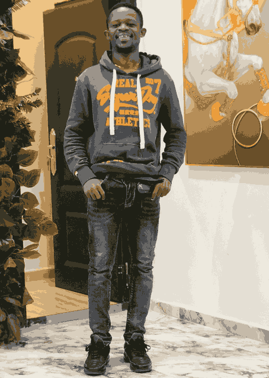

Meikizedek Chibuzor|WDD 130

Hello! My name is Meikizedek Chibuzor and I am from Lagos, Nigeria. I am a professional data analyst and an aspiring web and app developer with a deep passion for technology and innovation. I enjoy working with data, discovering meaningful insights, and building digital solutions that can solve real-world problems. Exploring the world of technology is something I truly love, and I find excitement in learning new tools, improving my technical skills, and challenging myself with new ideas. From analyzing datasets to designing and developing websites and applications, tech has become more than just a career path for me—it is also my hobby and a space where my creativity and problem-solving abilities thrive. I strongly believe that technology has the power to transform lives, create opportunities, and shape the future, and I am committed to continuously growing, building impactful projects, and contributing to innovative solutions that can make a difference.